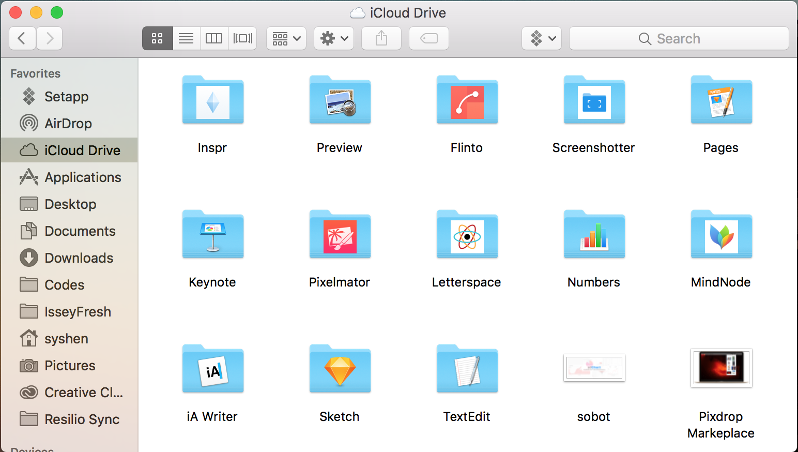
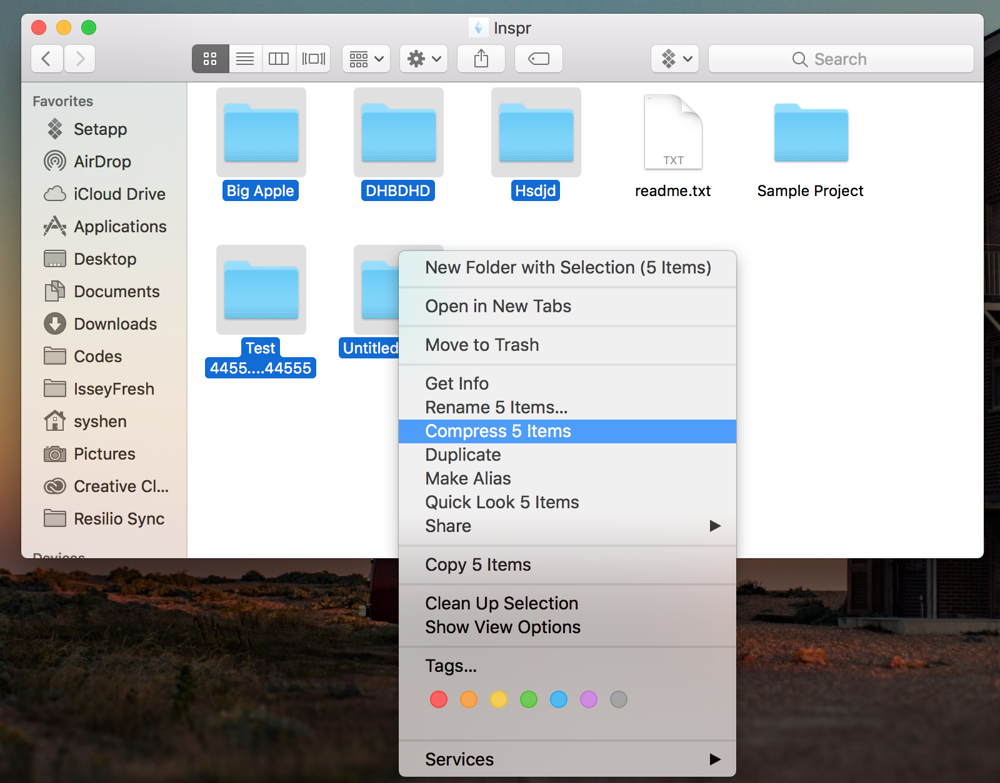

How to backup
Inspr now supports iCloud Drive, therefore you can access all your files from the iCloud Drive app or iCloud.com. iCloud is an Apple's technic to synchronize app's files cross devices. If you have a Mac device, it will be easier to access all your files. If not, no need to worry, you still can download your files from iCloud.com
For Mac device
If you are using Mac device and login with your Apple account, you can access all your iCloud files on Finder:

All your files are in the "Inspr" folder. And go into the "Inspr" app directory, you will find several project folder. Each project is in seperate folder now. The folder name is also your project name.
If you want to back files, just select the files or folders you want to backup, then compress the files you select, and save the compression to somewhere else.
Or you can also copy the selected folders and files to the place you want to backup.

To restore files, just simply copy your backup back to Inspr folder in the iCloud Drive. But remember, the design file needs to be under a project folder, or you won't see it in the Inspr app.
For PC or Windows
If you are using Windows or other PC platforms, to you can access files from iCloud.com , or download iCloud Drive client from Apple's
website.
If you choose to login iCloud.com, you can login with your apple ID and password. Once you login, you should see the iCloud Drive icon. If not, please check this
website for the troubleshooting.
Goes into iCloud Drive, and you will find Inspr folder. If not, please check this
website for trouble shooting.
In iCloud.com, you can download to backup locally. Or upload your backup to restore it (place it under any project folder).